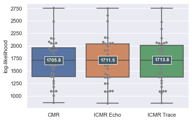

9 Repetition Effects: Fitting

Free recall datasets with high amounts of repetition to the extent simulated in the above example do not exist. However, to support an initial comparison of how models account for item repetition effects, we use data associated with Siegel and Kahana (2014)’s analyses. Within the dataset, 35 subjects performed delayed free recall of 48 lists over four sessions. Except for deliberate item repetitions, words were unique within each session and did not repeat in successive sessions. The semantic relatedness of words was also controlled below a value of .55 according to WAS (Steyvers, Shiffrin, and Nelson 2005). Across trials, lists were structured in four different ways:
In control lists, all items were only presented once.
In pure massed lists, items were presented twice, always in succession (e.g. 1, 1, 2, 2)
In pure spaced lists, items were presented twice with spacing of repetitions from 1 to 8 positions, with each spacing amount equiprobable.
Finally, mixed lists feature once-presented, massed, and spaced items, with each spacing amount equiprobable
As with previous analyses, each model variant was fit once for each participant to identify the parameter configuration maximizing the likelihood of observed recall sequences given the considered model. The distribution of data log-likelihoods given each fitted model and participant are plotted in ?fig-lohnasfits, with median values for each model variant highlighted. Similarly to previous analyses, these value distributions were found largely similar. The median log-likelihood across participants for PrototypeCMR and InstanceCMR were found to be 1711.5 and 1713.8, respectively, suggesting that all considered model variants can predict recall sequences even when item repetitions occur during study with similar degrees of success.
While follow-up analysis of summary statistics in previous analyses focused on benchmark phenomena such as serial position effects, inclusion of item repetitions in study designs complicates associated visualizations. Instead, we focused comparison on summary statistics measuring classical item repetition effects. In Figure 9.2, we measure how effectively our prototype- and instance-based CMR implementations account for the spacing effect. Main model variants were fit across the entire dataset to optimize the likelihood of observed recall sequences. Then, 1000 times for each model, study phases of each trial in the mixed condition of the dataset were simulated and then followed with simulation of free recall. We then plot for both the behavioral data and simulated datasets, the rate at which items were recalled, binned based on the number of intervening items between repetitions. Recapitulating all previous analyses, we again found that both our prototype-based and main instance-based implementations of CMR predicted similar patterns of effects of repetition spacing on later item recall, despite architectural differences.